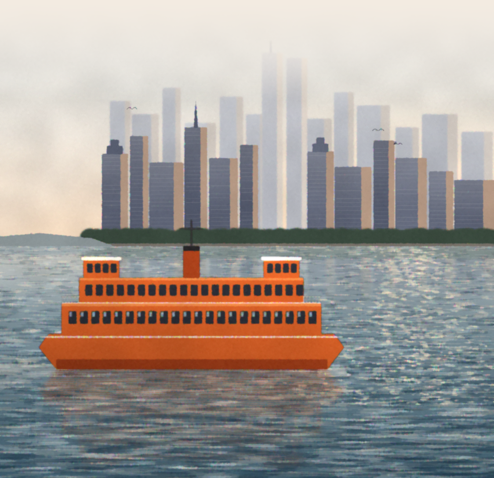

After five, Monday to Friday
The Long Bar
Manhattan4.50
Bourbon stirred cold with sweet vermouth and bitters, served up with a cherry.
Dry martini4.50
Gin or vodka, a whisper of vermouth, olive or a twist.
House wine3.50
Chablis, rosé or burgundy by the glass.
The private room upstairs. Deal lunches for twelve, 19.88 a head.
Whitehall St., N.Y. 10004. (212) 555-1988.
Prices subject to change. Form PM-88. Printed in U.S.A.
Prices subject to change. Form PM-88. Printed in U.S.A.
RESERVED
Mr. Trask, party of 6
1:00, private room
1:00, private room

At the South Ferry · Est. 1931
WHITEHALL
GRILL
Luncheon, dinner and the long bar